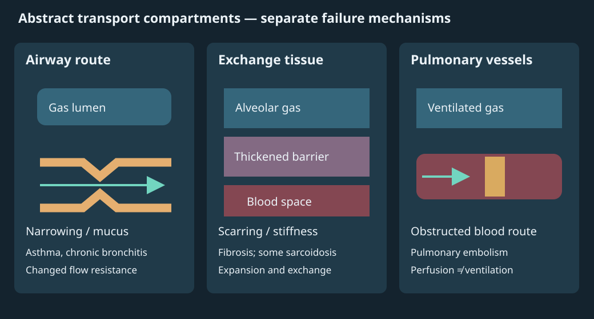

08. Oxygen delivery, lung volumes and measurement
A walker becomes unusually breathless on an uphill route, yet the fingertip oximeter displays a reassuring saturation. Has the instrument disproved an oxygen-transport problem? It has answered only one restricted question. The lungs must move gas and exchange it with blood; hemoglobin must carry oxygen; the heart must move that blood; tissues must extract and use its oxygen. A saturation estimate cannot independently establish the success of every link. Oxygen enters blood across the pulmonary exchange barrier, while carbon dioxide produced in tissues is carried back to the lungs for exhalation; the two gases have different carriage chemistry. We will build an accounting system that keeps those links separate, then ask what each instrument can actually observe.
The source spine is official NPTEL L18–19, with complete caption-text reading and reuse of a bounded visual audit of 122 sampled stills and eleven targeted frames. This is not continuous audio/video review. The calculations, diagrams and parameter sweeps are original teaching constructions; their synthetic inputs are not measurements from the walker. Chapters 3, 5 and 7 provide blood, pump and gas-exchange prerequisites. Clinical sources are used to delimit measurement claims, not to supply a treatment calculator.
8.1 How much oxygen can a specified hemoglobin pool bind? L18 02:01
Hemoglobin, abbreviated Hb, is the oxygen-binding protein in red blood cells. An oxygen content is an amount of oxygen per specified volume of blood. A capacity is the maximum amount that the specified hemoglobin pool could bind under the stated convention. Actual bound oxygen additionally depends on the fraction of available binding sites occupied by oxygen. Neither quantity is a gas pressure.
Start with the source's assumed blood volume of 5 L and hemoglobin concentration of 150 g/L. Multiplying gives 750 g of hemoglobin. Using a binding-capacity convention of 1.34 mL O₂/g Hb at full saturation, the maximum bound amount is
The cancellations show exactly what was calculated: an oxygen amount, expressed as a gas-equivalent volume, bound to a uniformly fully saturated, assumed 5 L blood pool. The calculation does not measure total-body oxygen. It omits dissolved oxygen, oxygen in lung gas and tissue stores, and the different saturations of arterial and venous blood. Blood recirculates, so a stock of bound oxygen and the amount passing a tissue each minute are also different quantities. The walker's difficulty cannot be assessed from this maximum stock alone.
The capacity coefficient is a disclosed physiological convention, rather than a universal exact constant. The source uses 1.34 here and 1.31 later; OpenAnesthesia's oxygen account also uses 1.31. We retain 1.31 in the later source-aligned calculations and say explicitly when 1.34 is used. This avoids inventing a scientific error merely because two conventions differ.
8.2 Partition lung gas before adding capacities L18 08:02
Let lung gas volume be measured relative to an empty-gas reference, in liters. This is not the lung's external tissue volume. Tidal volume, \(V_T\), is gas entering or leaving during a quiet breath. Inspiratory reserve volume, IRV, is the additional volume inspired from the end of a quiet inspiration to maximal inspiration. Expiratory reserve volume, ERV, is the additional volume expired from the end of a quiet expiration to maximal expiration. Residual volume, RV, is gas remaining after maximal expiration. These four nonoverlapping subdivisions define the volume accounting. The ERS/ATS 2023 lung-volume statement supplies the measurement definitions.
Figure 8.1 follows these reference points through a maneuver. The reference points matter more than memorizing a typical number. Quiet expiration ends above RV; it does not empty the lung. Quiet inspiration begins at that end-expiratory level and adds \(V_T\). A maximal inspiration reaches the upper limit. The gas change from maximal expiration to maximal inspiration is therefore larger than a quiet breath, but smaller than the total gas remaining at maximal inspiration because RV was already present at the start.
| Capacity | Reference levels | Sum | Result |
|---|---|---|---|
| Inspiratory capacity, IC | End quiet expiration → maximal inspiration | VT + IRV | 3.5 L |
| Functional residual capacity, FRC | Gas remaining at passive end quiet expiration | ERV + RV | 2.3 L |
| Vital capacity, VC | Maximal inspiration → maximal expiration | IRV + VT + ERV | 4.6 L |
| Total lung capacity, TLC | Gas remaining at maximal inspiration | IRV + VT + ERV + RV | 5.8 L |
Two independent ways to assemble TLC provide a conservation check: \(\mathrm{TLC}=\mathrm{IC}+\mathrm{FRC}=\mathrm{VC}+\mathrm{RV}\). With the synthetic vector, both give 5.8 L. The source's worked VC example also gives \(3.0+0.5+1.1=4.6\) L. Combining approximate values taken from different source slides can violate these identities; rounding and between-person variation cannot justify presenting an internally inconsistent vector as one person's measurements.
Print/text equivalent: quiet gas volume ranges from 2.3 to 2.8 L; maximal inspiration reaches 5.8 L; maximal expiration leaves 1.2 L. IC spans 2.3–5.8 L; VC spans 1.2–5.8 L. Table 8.1 supplies all subdivisions and sums.
A volume change is easier to measure than an absolute gas inventory L18 14:02
Spirometry measures gas moving through the mouth, commonly integrating a flow signal to obtain volume changes. A spirogram plots measured volume change against time. Gas that never leaves during the maneuver cannot be counted directly by that measurement. Ordinary spirometry therefore cannot directly determine RV or capacities containing RV, namely FRC and TLC. Independent lung-volume techniques, such as body plethysmography or gas dilution/washout, provide additional information; linked spirometry then permits capacity calculations. The ERS/ATS statement emphasizes this distinction and the possibility of method differences in disease.
Forced vital capacity, FVC, is the volume expired in a forced maneuver beginning at full inspiration. It describes a specified maneuver, whereas VC is the general maximal volume change between the same endpoints. A low FVC alone does not establish a restrictive defect: incomplete emptying or gas trapping can also reduce it. Establishing reduced TLC requires the relevant lung-volume measurement and an appropriate reference comparison. Age, height, sex, technique and population reference equations matter; the synthetic 5.8 L in Table 8.1 is not a diagnostic threshold.
RV is a reference volume, not a packet of air permanently trapped unchanged in the same alveoli. Gas mixes and exchanges between breaths. Nor is residual gas alone the mechanism preventing every alveolus from collapsing. Lung and chest-wall mechanics, airway closure, surfactant and local pressure relationships determine stability. This corrects the source's compressed “air remains to maintain surface tension” explanation: surfactant lowers surface tension, and an inventory label does not substitute for a mechanical account.
8.3 Oxygen content combines bound and dissolved amounts L18 16:54
Return to the walker. Suppose two blood samples have the same oxygen saturation but different hemoglobin concentrations. Their hemoglobin molecules may have the same fractional occupancy while the samples carry different amounts of oxygen. To express this, let \([\mathrm{Hb}]\) denote hemoglobin concentration in grams per deciliter of blood; 1 dL is 100 mL and 1 L is 10 dL. Let \(S_{a\mathrm O_2}\) denote arterial hemoglobin oxygen saturation as a fraction between zero and one, in a model containing oxyhemoglobin and deoxyhemoglobin without important abnormal hemoglobin species. “Arterial” here means systemic blood supplying tissues. A printed saturation of 98% enters an equation as 0.98.
Let \(P_{a\mathrm O_2}\) denote the partial pressure of dissolved oxygen in arterial blood, expressed in mmHg. Partial pressure measures a dissolved gas's contribution to the gas-equilibrium driving condition; it does not count all oxygen molecules bound to hemoglobin. Define \(C_{a\mathrm O_2}\) as arterial oxygen content in mL O₂ per dL blood. If \(k\) is the chosen fully saturated hemoglobin capacity in mL O₂/g Hb and \(\alpha\) is dissolved-oxygen solubility in mL O₂/(dL blood·mmHg), adding the two physically different stores gives
The first product counts the amount hemoglobin could bind and then takes its occupied fraction. The second follows Henry's-law proportionality for the dissolved gas at the stated conditions. Loyola's oxygen-transport account supplies the conventional approximately 0.003 mL O₂/(dL·mmHg) solubility. For these teaching calculations we use \(k=1.31\) and \(\alpha=0.003\). The relation approximates an amount balance under a specified convention; it is not a substitute for direct measurement when hemoglobin species or conditions violate its assumptions.
Pressure units must travel with solubility. Since 1 kPa is approximately 7.5006 mmHg, the corresponding coefficient is \(0.003\times7.5006\approx0.0225\) mL O₂/(dL·kPa). The L18 equation explicitly gives the pressure in kPa. With 15 g/dL Hb, full saturation and 13.3 kPa, equation (8.2) gives about 19.95 mL/dL, matching that source example. The room-air oxygen fraction is approximately 0.21, or 21%, rather than the source caption's 0.021; this inspired-gas fraction is itself distinct from arterial saturation.
Correct a dimensional error without changing a valid convention L18 22:22
Take the later source problem's explicitly assumed values: Hb 15 g/dL, arterial saturation 98%, arterial oxygen pressure 100 mmHg and cardiac output 5 L/min. The bound term is \(1.31\times15\times0.98=19.257\) mL/dL. The dissolved term is \(0.003\times100=0.300\) mL/dL. Thus \(C_{a\mathrm O_2}=19.557\) mL/dL. The dissolved fraction of this total is approximately 1.53%; a blanket 97% bound/3% dissolved partition is not a universal identity.
The source instead carries its per-kPa coefficient into this mmHg example, calculating \(0.0225\times100=2.25\). That multiplication is arithmetically correct; pairing those units is the error. Converting 100 mmHg to approximately 13.33 kPa before multiplying by 0.0225 repairs it, as does using 0.003 with mmHg. Changing 1.31 to 1.34 is a separate convention choice, not the repair of the pressure-unit error. With 1.34 retained consistently, the same inputs would give 19.998 mL/dL.
Delivery is an incoming rate; consumption is a difference L18 19:44
Let \(Q\) be cardiac output in liters of blood per minute, using \(Q\) rather than CO so that it cannot be confused with carbon monoxide. Let \(D_{\mathrm O_2}\) be systemic oxygen delivery in mL O₂/min: oxygen entering the systemic circulation with arterial blood each minute. Converting liters to deciliters gives
The factor 10 is not an empirical biological constant. It is 10 dL/L. In the corrected example, \(D_{\mathrm O_2}=10\times5\times19.557=977.85\) mL/min. Omitting the conversion gives a tenfold error. The result is a rate, so “global daily delivery” is inappropriate unless the interval and its integration are explicitly changed. Delivery also does not mean every arriving oxygen molecule leaves the blood: much of it returns in venous blood and circulates again.
Let \(C_{\bar v\mathrm O_2}\) be mixed-venous oxygen content, the flow-weighted systemic venous return after blood from different organs has mixed, in mL/dL. A sample from one arm vein need not represent that mixture. Let \(M_{\mathrm O_2}\) denote oxygen stored inside a chosen systemic exchange boundary, and \(\dot V_{\mathrm O_2}\) denote oxygen consumption there, both amount and rate being expressed in consistent oxygen-volume units. Let time \(t\) be measured in minutes. With equal incoming and outgoing blood flow and no other oxygen route, conservation gives
At steady state the inventory is not changing, so rearrangement yields the Fick principle, \(\dot V_{\mathrm O_2}=10Q(C_{a\mathrm O_2}-C_{\bar v\mathrm O_2})\). It is an input-minus-output balance, distinct from Fick's local diffusion law. For a single organ use that organ's flow and draining venous content instead. A shunt can change arterial or mixed-venous content without invalidating conservation across a correctly defined systemic boundary. A cardiac shunt can make pulmonary and systemic flows differ, so the flow and samples must correspond to the chosen boundary. During changing oxygen stores, or with nonrepresentative venous sampling, the simple steady-state identification of a measured content difference with whole-body consumption is not justified. Loyola's supply-and-demand discussion gives the physiological conservation relation used here.
Write \(C_a\) and \(C_{\bar v}\) as short forms of the arterial and mixed-venous oxygen contents. For a synthetic resting state with \(C_a=20\), \(C_{\bar v}=15\) mL/dL and \(Q=5\) L/min, incoming delivery is 1000 mL/min, returning oxygen is 750 mL/min and consumption is 250 mL/min. The difference of contents, 5 mL/dL, is extraction per blood volume; it becomes a consumption rate only after multiplication by flow. This resolves a compressed source statement that calls the content difference alone “VO₂.”
Figure 8.2 keeps the incoming, consumed and returning rates synchronized. The oxygen extraction ratio, \(E\), is consumption divided by delivery under this balance. For positive flow and positive arterial content, the same flow and unit factor cancel:
The synthetic state therefore extracts \((20-15)/20=0.25\), or 25%. The remaining 75% of incoming oxygen content returns; this is not a claim that only 25% was delivered. If \(C_a=19\) mL/dL and \(E=0.30\), venous content is \(19\times0.70=13.3\) mL/dL. The source's separate rounded figures 254.5 mL/min consumption and 997.5 mL/min delivery give \(E=0.25514\), approximately 0.26. These examples are accounting states, not universal resting fractions.
Print/text equivalent: at Hb 15 g/dL, saturation 0.98, pressure 100 mmHg and Q 5 L/min, content is 19.557 mL/dL and delivery 977.85 mL/min. At Hb 7.5 with the other inputs fixed, content is 9.9285 mL/dL and delivery 496.425 mL/min. Saturation remains 98% in both states. Extracted plus returned rates equal delivery at each state.
Exercise connects body mass, regional flow and extraction L18 27:36
Maximal oxygen consumption, \(\dot V_{\mathrm O_2\max}\), is the maximum oxygen uptake attained under the defined exercise-test conditions; a mass-normalized report divides that rate by body mass. For the source's hypothetical 70 kg soccer player, 45 mL/(kg·min) corresponds to \(45\times70=3150\) mL/min, or 3.15 L/min. A later 52 mL/(kg·min) corresponds to 3.64 L/min. The absolute increase is \(3.64-3.15=0.49\) L/min, a 15.56% increase relative to the initial value. The caption's intermediate “3.5” is inconsistent with the multiplication; the 3.15 value used in its later subtraction is coherent.
Nothing in this conversion identifies whether the change came from cardiac output, extraction, hemoglobin, training conditions or another determinant. A useful physiological investigation would require additional measurements; algebra cannot determine an unmeasured mechanism. For the walker, even an accurately high saturation does not fix maximal output or working-muscle extraction.
A regional version makes the unit structure tangible. A muscle receives 500 mL blood/min, or 0.5 L/min. Its arterial and draining venous contents are 19 and 9 mL/dL. Each 100 mL blood loses 10 mL oxygen, so five such blood portions per minute lose 50 mL O₂/min. In equation form, \(10(0.5)(19-9)=50\). The incoming rate is 95 mL/min, returning rate 45 mL/min and extraction ratio \(10/19\approx52.63\%\). The 9 mL/dL is oxygen remaining in venous blood, not the oxygen already consumed.
8.4 Carbon monoxide changes both carriage and interpretation L19 01:05
Carbon monoxide is a gas containing one carbon and one oxygen atom. Its abbreviation CO must be distinguished from the cardiac-output abbreviation sometimes used elsewhere. It is formed in incomplete combustion of carbon-containing fuels and is colorless and odorless. Its danger is not reliably announced by a distinctive smell. The CDC clinical account, reviewed 21 August 2026, describes systemic toxicity involving impaired oxygen delivery and cellular oxygen utilization.
Endogenous production is a separate context. Heme oxygenase enzymes break down heme, producing biliverdin, iron and carbon monoxide; biliverdin is subsequently converted to bilirubin. The abstract of Ryter, Alam and Choi's heme-oxygenase review establishes the pathway and discusses endogenous CO signaling. This does not imply that inhaling an uncontrolled external dose is beneficial. Source, concentration, cellular compartment and exposure history distinguish a regulated endogenous pathway from poisoning. No therapeutic inference is drawn here from signaling research.
When carbon monoxide binds hemoglobin it forms carboxyhemoglobin, COHb. That molecule is not simply deoxyhemoglobin: deoxyhemoglobin has oxygen-binding sites not occupied by oxygen, while a carbon-monoxide-occupied site is unavailable for oxygen carriage. Carbon monoxide has a much higher affinity for Hb than oxygen under comparable conditions. The source's “200–300 times” is a contextual affinity comparison, not a universal conversion between inspired ppm and blood saturation. The oxygen-transport account's CO comparison also emphasizes reduced oxygen capacity and altered unloading: the remaining oxygen-bound sites hold oxygen more tightly. Thus loss of binding capacity and impaired release are distinct effects.
The L19 cooperative-binding recap belongs with Chapter 7's Hb model: adult Hb has two alpha and two beta chains, and its cooperative change concerns protein conformation rather than oxidation of functional heme iron. The source's mixed pressure/volume labels and apparent fixed pressure for complete CO occupancy are not used as binding laws. Oxygen and carbon-monoxide occupancy depend on competing gas conditions and the molecular state; a one-axis source sketch is insufficient to infer exposure kinetics.
An oxygen partial-pressure measurement alone can miss a binding-capacity problem because it concerns dissolved oxygen. An ordinary two-wavelength pulse oximeter is also unreliable when COHb is present. CDC describes laboratory multiwavelength CO-oximetry as the relevant measurement of hemoglobin species in a blood sample; arterial or venous blood can be used for COHb testing. Exposure history and elapsed time still matter, and COHb alone does not reliably indicate illness severity. This explains why the walker's apparently reassuring display is not a proof of adequate oxygen transport.
A half-life is not a guaranteed recovery time L19 07:44
The source presents ppm/time/symptom and oxygen/hyperbaric tables. Parts per million, ppm, describes gas concentration as a million-part fraction under the specified gas convention; it is not blood COHb saturation. Such tables cannot establish a safe exposure or predict an individual's symptoms. We retain their mechanistic question—how exposure and inspired conditions affect uptake and removal—without turning their numerical rows into thresholds for diagnosis or treatment.
A mathematical half-life is an interval over which a quantity halves under a specified model. If a synthetic burden \(B(t)\) obeys \(dB/dt=-\lambda B\), where \(\lambda>0\) is a constant removal rate and \(t\) is time, then \(B(t)=B(0)e^{-\lambda t}\). Defining half-life \(T_{1/2}=\ln2/\lambda\) gives \(B(t)/B(0)=2^{-t/T_{1/2}}\). One half-life leaves 50%, two leave 25%, and three leave 12.5%; no finite number of such intervals guarantees zero. This derivation diagnoses the logical error in equating a 50%-removal time with “complete removal.” It does not validate an exponential model of a particular exposed person.
Oxygen administration and hyperbaric oxygen are clinical management topics in the source. Hyperbaric means pressure above ordinary atmospheric pressure; changing pressure and inspired oxygen can change dissolved oxygen and removal conditions. The CDC page discusses clinical assessment and specialist consideration of hyperbaric therapy. We do not reproduce a pressure prescription, universal clearance time, broad indication list or promise of recovery. The source's lists of unrelated hyperbaric uses require indication-specific evidence and are excluded from this quantitative respiratory model.
8.5 What the pulse oximeter estimates L19 13:45
Pulse oximetry estimates arterial hemoglobin oxygen saturation optically from a pulsatile signal. Its displayed value, \(\mathrm{SpO_2}\), is usually expressed as a percentage. It is not arterial oxygen pressure, and it is not the percentage of red cells carrying any oxygen. A red cell contains many hemoglobin molecules whose sites can have different occupancies. The visible L19 slide and narration misdefine SpO₂ in both ways; the distinction is substantive rather than a cosmetic change of notation. Nor does SpO₂ report Hb concentration, cardiac output or oxygen consumption.
In a transmission probe, light emitters and a detector lie on opposite sides of a tissue path such as a fingertip. Oxyhemoglobin and deoxyhemoglobin have different wavelength-dependent absorption. Red light near 660 nm and an infrared wavelength such as 940 nm are common choices; wavelengths vary by design. Neither species simply transmits all of one color and absorbs all of the other. Changes in detected light over the pulse cycle help separate an arterial pulsatile component from the nonpulsatile background. The optical bench study's background and methods provide this instrument framework.
Let \(AC_{\mathrm{red}}\) and \(AC_{\mathrm{IR}}\) denote positive pulse amplitudes of the red and infrared detected signals in a chosen consistent amplitude convention. Let \(DC_{\mathrm{red}}\) and \(DC_{\mathrm{IR}}\) denote their positive baseline levels. AC and DC here are signal components, not alternating and direct oxygen flows. The dimensionless ratio of normalized amplitudes is
Normalization removes an overall multiplicative intensity factor in an idealized channel. It does not make tissue a nonscattering two-dye cuvette. Wavelength-dependent scattering, optical path, probe geometry and signal processing require empirical calibration. Manufacturers' calibration curves differ. The source's \(130-30R\) relation is therefore an illustrative mapping, not a universal device algorithm. With synthetic amplitudes 2 and 2 and baselines 100 and 100, \(R=1\) and that mapping gives 100%. Halving only the red amplitude gives \(R=0.5\) and 115%, immediately exposing the danger of extrapolating the line as a physiological law.
Print/text equivalent: a transmission path connects red/IR emitters, tissue and detector. Synthetic AC/DC ratios give R=1; the source's illustrative line gives 100%. Separately, with 20% COHb and 98% oxygen occupancy among remaining non-CO sites, oxygen-bound fraction of all sites is 78.4%, deoxygenated fraction 1.6%, and CO-bound fraction 20%. Ordinary two-wavelength measurement cannot resolve those species reliably.
Figure 8.3 separates instrument signals from the underlying occupancy question. Functional saturation is oxygenated Hb divided by oxygenated plus deoxygenated Hb; fractional oxyhemoglobin uses all relevant Hb species in its denominator. The LOINC technical brief supplies these denominator definitions; its older instrument-market discussion is not adopted as a current performance claim. In a synthetic three-species pool, let \(f_{\mathrm{CO}}\) be the CO-bound fraction and \(s\) the oxygenated fraction among the remaining sites. Then the fractions of all sites are \(f_{\mathrm O_2}=(1-f_{\mathrm{CO}})s\), \(f_{\mathrm{deoxy}}=(1-f_{\mathrm{CO}})(1-s)\) and \(f_{\mathrm{CO}}\); they sum to one. With \(f_{\mathrm{CO}}=0.20\) and \(s=0.98\), they are 0.784, 0.016 and 0.20. Equation (8.2)'s bound term would need the oxygen-bound fraction of total Hb in this model. Entering an apparently high conventional SpO₂ as if it measured that fraction is not justified. This is occupancy accounting, not a CO-binding kinetic model or an optical calibration.
The FDA overview discusses concerns about accuracy across skin pigmentation. On 4 November 2026 its January 2025 guidance page still identifies that document as draft, nonbinding and not for implementation. A regulatory proposal is not evidence that every existing device has met it.
The bench study used simulated signals and attenuating filters. Its authors explicitly caution that those tests do not settle the effects of melanin in vivo. A January 2026 correction repairs one missing minus sign in a filter-table entry, with results and conclusions unchanged. It does not establish a universal pigmentation correction. The broader inference is methodological: demonstrating a cancellation under a controlled signal model is weaker than validating an instrument across real tissue conditions and populations.
8.6 Locate the failed link in respiratory disease L19 17:06
Dyspnea means the subjective experience of uncomfortable breathing. It is an outcome with multiple possible mechanisms, not the name of one oxygen-saturation abnormality. The later source topics can be organized by where they alter the transport chain: conducting airways, exchange tissue, pulmonary vessels, infection-related injury or malignant growth. These categories overlap in real disease. They are useful because they tell us which missing measurement would address a question raised by the walker.

| Topic and location | Mechanism relevant to this chapter | What the category does not establish |
|---|---|---|
| Asthma — airways | Airway inflammation and episodic narrowing impede airflow, especially outward flow. Triggers can include allergens, exercise or viral infection. NHLBI asthma. | A trigger is not the same as a universal cause, and asthma is not simply a bacterial infection. |
| Bronchitis and bronchiectasis — airways | Bronchitis concerns inflamed bronchial lining. Chronic bronchitis includes persistent irritation with mucus; bronchiectasis instead involves damaged, abnormally widened airways with impaired mucus clearance and recurrent infection. NHLBI COPD; bronchiectasis. | The caption's bronchitis and the visible slide's bronchiectasis are related airway topics, not interchangeable words. |
| COPD — airways and parenchyma | Chronic obstructive pulmonary disease combines varying contributions of small-airway/chronic bronchitic disease and emphysematous air-sac damage; airflow becomes limited. Tobacco, pollutants and genetic susceptibility have relevant roles. NHLBI COPD. | Infections can worsen disease; naming bacteria or inflammatory cytokines alone does not explain every case or establish COPD. |
| Pulmonary fibrosis — exchange tissue | Scarring thickens and stiffens lung tissue, limiting expansion and impairing exchange. Idiopathic pulmonary fibrosis has no established single cause. NHLBI fibrosis. | Fibrosis is not universally a capsule built around unremoved dust. Collagen is extracellular protein, not a “collagen cell.” |
| Sarcoidosis — tissue/immune process | Organized inflammatory cell aggregates, granulomas, commonly involve lungs and chest lymph nodes; some cases develop fibrosis. NHLBI sarcoidosis. | A granuloma is not synonymous with a tumor, tuberculosis or inevitable progressive scarring. |
| Pulmonary hypertension — vessels/pump load | Raised pressure in the pulmonary circulation increases the right heart's pumping burden. Its causes include several distinct disease groups. NHLBI pulmonary hypertension. | It is not simply systemic hypertension relocated, nor must every case be one visibly narrowed artery. |
| Pulmonary embolism — perfusion route | A clot can travel from a deep vein and obstruct pulmonary blood flow; gas may reach regions whose perfusion is impaired. NHLBI thromboembolism. | Venous clot formation and the subsequent traveling embolus are different events. A normal airway does not establish normal perfusion. |
| Pneumonia, tuberculosis and influenza — infection | Pneumonia can fill alveolar spaces with inflammatory fluid and has bacterial, viral or fungal causes. Tuberculosis is associated with Mycobacterium tuberculosis, often involving lungs; inactive infection differs from active disease. Influenza viruses cause a respiratory infection that can involve lungs and produce complications. NHLBI pneumonia; CDC TB; CDC influenza. | Pneumonia is not exclusively bacterial; a pathogen label does not by itself quantify gas-exchange impairment or prescribe treatment. |
| Lung cancer — malignant growth | Non-small cell and small cell lung cancers are distinct major categories. Smoking is a major cause, while nonsmokers can also develop lung cancer. NCI lung cancer. | A cough, breathlessness or blood in sputum is not specific to cancer. Histology, stage and molecular findings matter; one category cannot safely be labeled uniformly “less aggressive.” |
Obstruction is resistance to moving air through the conducting route. Narrowing and mucus can increase the work needed to achieve a given airflow, and impaired expiration can leave more gas behind. Restriction concerns a reduced accessible total lung capacity under the appropriate measurement definition. Stiff fibrotic tissue offers one route to reduced expansion; a blocked vessel offers a different problem, namely inadequate perfusion. Figure 8.4 deliberately separates these routes instead of drawing every disease as a smaller alveolus.
Infection and cancer can affect several routes at once. For example, fluid-filled exchange spaces and an obstructed bronchus are spatially different failures even if both impair oxygenation. The source's late cancer slide reports a global burden for 2020; those historical statistics are not used as current incidence or mortality. Its undifferentiated therapy list is replaced by the NCI entry points for the separate cancer categories. Selecting surgery, radiation, cytotoxic, targeted or immune therapy requires evidence beyond an oxygen-accounting chapter; “hormonal therapy” is not promoted as a generic lung-cancer treatment here.
The running case now has a disciplined interpretation. A saturation display constrains one measurement channel. It does not measure lung volumes, identify an obstruction, establish Hb concentration, determine regional perfusion, exclude COHb or measure cellular use. The useful next scientific question is therefore which link is uncertain and what independent observation could constrain it. This is a measurement-design argument, not a diagnosis of the walker.
8.7 Reproduce the accounting and challenge its limits
The executable lab ch08_oxygen_accounting.py uses only the Python standard library. Run python code/ch08_oxygen_accounting.py from the book directory. The corresponding browser calculations are in ch08-models.js. Inputs are explicit synthetic volumes, Hb concentration, fractional saturation, pressure with a named unit, blood flow, venous content and normalized optical signals. Outputs are capacities, oxygen contents and rates, occupancy fractions and an illustrative signal ratio. The permitted domains reject negative, nonfinite or inconsistent content inputs; zero delivery produces no defined consumption/delivery ratio.
Actual output from the lab includes PASS: 144 mass balances, units, capacities, limits, invalid inputs, arterial bound/dissolved/total values 19.257, 0.300, 19.557, corrected source delivery 977.85 mL/min and exercise rates 3.15, 3.64, 0.49 L/min. Floating-point output can retain harmless terminal digits. The checks compare mmHg and kPa formulations, capacity identities, delivery = consumption + returning rate, and zero/full extraction limits. Python–JavaScript parity is checked separately against the same inputs; agreeing implementations are an arithmetic check, not biological validation.
The lung trace prescribes a maneuver, the Hb animation sweeps independent parameter values, and the optical trace is a synthetic pulse-shaped signal. None fits a patient, solves ventilatory mechanics, models CO uptake/removal, predicts a clinical saturation error or estimates a treatment response. Local heterogeneity, oxygen-storage transients, shunts, altered Hb species beyond the illustrative occupancy pool and tissue diffusion/utilization dynamics are outside the executable model.
8.8 Six worked problems
Capacity versus inventory. For the assumed 5 L pool with Hb 150 g/L and capacity coefficient 1.34 mL/g, calculate fully saturated bound capacity. If a synthetic uniform occupancy were 75%, what bound amount would follow? Explain why neither value is total-body oxygen.
Worked solution
Hb mass is \(5\times150=750\) g. Fully saturated bound capacity is \(750\times1.34=1005\) mL. Multiplying by 0.75 gives 753.75 mL bound in the uniform-occupancy model. Neither calculation includes dissolved, pulmonary-gas or tissue oxygen; real arterial and venous pools also have different occupancies. The 75% assumption is a constructed pool property, not an inferred body measurement.
Reconstruct and test a lung-volume claim. Use VT=0.5, IRV=3.0, ERV=1.1 and RV=1.2 L. Derive IC, FRC, VC and TLC. Can an ordinary spirometer independently confirm all four? Would FVC=3 L alone establish restriction?
Worked solution
IC is \(0.5+3.0=3.5\) L; FRC is \(1.1+1.2=2.3\) L; VC is \(3.0+0.5+1.1=4.6\) L. Adding RV gives TLC 5.8 L, also \(3.5+2.3\). A spirometer observes changes at the mouth; unexpired RV is not directly observed. FRC and TLC therefore need an independent volume measurement. FVC 3 L is a maneuver result without an appropriate reference and TLC; air trapping, incomplete performance or restriction remain distinct possibilities. It cannot establish restriction alone.
Repair a unit error. With Hb=15 g/dL, SaO₂=98%, PaO₂=100 mmHg, k=1.31 and Q=5 L/min, derive content and delivery. A notebook gives 1075.35 mL/min using 0.0225×100 for dissolved oxygen. Identify the exact failure.
Worked solution
Convert 98% to 0.98. Bound oxygen is \(1.31\times15\times0.98=19.257\) mL/dL. With pressure in mmHg, dissolved oxygen is \(0.003\times100=0.300\) mL/dL. Content is 19.557 mL/dL and delivery \(10\times5\times19.557=977.85\) mL/min. The notebook's per-kPa coefficient was multiplied by a numerical mmHg pressure. Its multiplication and subsequent sum are not the dimensional repair. Converting pressure to kPa first or changing the solubility unit fixes the failure while preserving k=1.31.
Infer flow under stated conservation assumptions. A muscle consumes 50 mL O₂/min while arterial and draining venous contents are 19 and 9 mL/dL. Infer flow and extraction. If flow halves while consumption is asserted unchanged, what venous content does the same model require?
Worked solution
Under steady balance, \(Q=50/[10(19-9)]=0.5\) L/min. Incoming delivery is 95 mL/min and extraction \(50/95=0.5263\). At Q=0.25 L/min, incoming delivery is only 47.5 mL/min. Solving \(50=10(0.25)(19-C_v)\) gives \(C_v=-1\) mL/dL. Negative oxygen content is inadmissible; the assertion of unchanged consumption cannot hold within this steady model. The calculation does not predict the biological response; it demonstrates incompatible assumptions and the need to consider altered consumption, flow or transient stores.
Exercise normalization and identifiability. A 70 kg player's reported maximal oxygen uptake increases from 45 to 52 mL/(kg·min) with mass unchanged. Calculate the absolute and relative increase. Does this demonstrate an increase in cardiac output?
Worked solution
Initial uptake is \(45\times70/1000=3.15\) L/min; final uptake is 3.64 L/min. Their difference is 0.49 L/min, and relative increase is \(0.49/3.15\times100=15.56\%\). Fick conservation contains both flow and the arterial–mixed-venous content difference. A higher uptake does not identify which factor changed. Additional independent flow/content measurements and comparable test conditions are required to infer the mechanism.
Interrogate an optical display. Synthetic red and IR signals each have AC=2 and DC=100 arbitrary signal units. Find R and the source's illustrative 130−30R value. Independently assume 20% CO-bound sites and 98% functional oxygen saturation in the remaining sites. Find fractional oxyhemoglobin. Can the illustrative optical value exclude COHb or establish adequate delivery?
Worked solution
Each normalized pulse amplitude is 0.02, so \(R=1\) and the illustrative mapping gives 100%. In the independent occupancy model, oxygen-bound fraction is \((1-0.20)0.98=0.784\), or 78.4% of all sites. Deoxygenated fraction is 1.6% and CO-bound fraction 20%; the sum is 100%. The optical signals were not derived from that pool, so the exercise predicts no actual device reading. Conventional two-wavelength oximetry cannot reliably resolve COHb; an empirical mapping under a two-species assumption cannot exclude a third species. Delivery also requires Hb concentration and flow. Even perfect saturation measurement would not supply those missing factors.
8.9 Sources, construction and evidence boundaries
Lecture navigation: L18, Gas Transport & Lung Volume Capacities; L19, Carbon Monoxide Poisoning, Oximeter & Lung Diseases, Prof. Sudip Mukherjee, IIT (BHU) Varanasi, NPTEL 102106670. Captions establish the topic spine; the separately recorded sampled-still audit supports the visible unit and measurement-definition corrections. Sampling is not a claim of continuous source observation. Source slides are not reproduced.
Independent sources linked at their claims were accessed on 4 November 2026. The author directly read the CDC CO guidance page; FDA overview and draft-guidance landing page; the optical bench article's abstract, introduction and methods 2.1–2.3; its correction; the PubMed abstract of the heme-oxygenase review; the linked NHLBI, CDC TB/influenza and NCI lung-cancer overview pages; OpenAnesthesia's oxygen account; Loyola's oxygen-transport text; and the definition sections of the LOINC saturation technical brief. ERS/ATS definitions and background were accessible in substantial indexed full-text excerpts, while direct publisher access returned 403; no complete standard or device-validation review is claimed. The abstract-only heme-oxygenase access supports no detailed therapeutic claim.
The diagrams and controlled animations use original illustrative colors and abstract geometry. They are not scans, patient traces or optical validation data. The executable lab verifies mathematical identities and unit consistency within its stated domains. Its arithmetic cannot prove a disease mechanism or confer clinical validity. The essential separation is between what a variable means, what a conservation law relates, and what an instrument has actually measured.